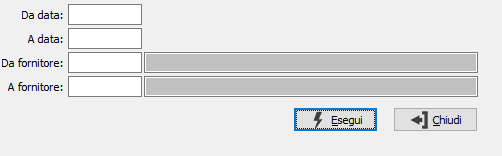

Situazione interessi di mora
Il programma provvede alla stampa della situazione relativa agli interessi di mora.

DA DATA: indicare la data del documento con cui si vuole iniziare l'analisi. Confermando a vuoto la stampa inizia con la prima partita valida.
A DATA: indicare la data del documento con cui si vuole terminare l'analisi. Confermando a vuoto la stampa termina con l’ultima partita valida.
DA FORNITORE: indicare il codice del fornitore da cui si intende iniziare l'analisi; confermando a vuoto la stampa inizia dal primo codice valido. Sul campo è attiva la ricerca F9.
A FORNITORE: indicare il codice del fornitore con cui si intende far terminare l'analisi; se si conferma a vuoto la stampa termina con l'ultimo codice valido. Sul campo è attiva la ricerca F9.